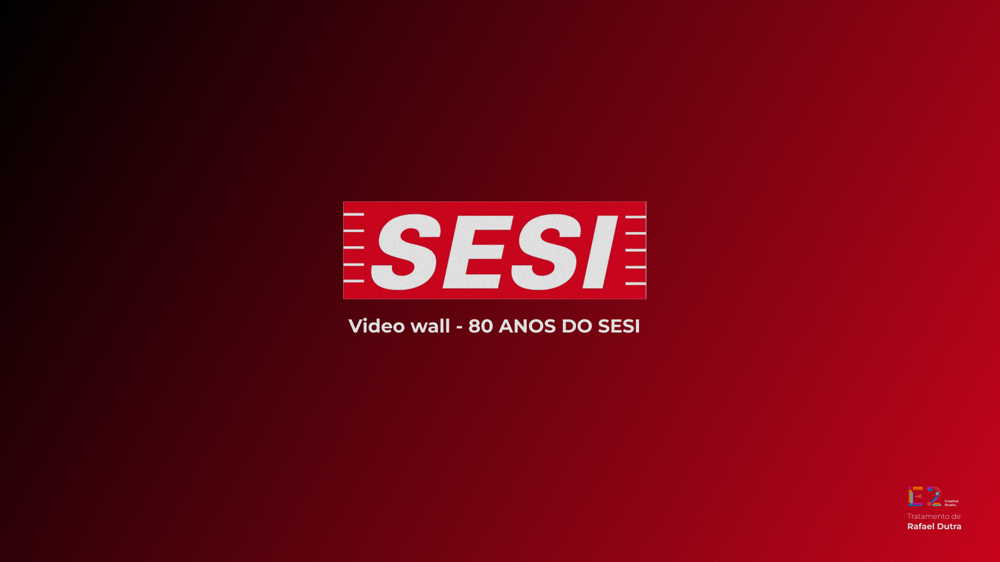
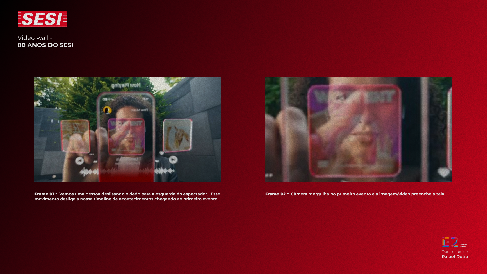
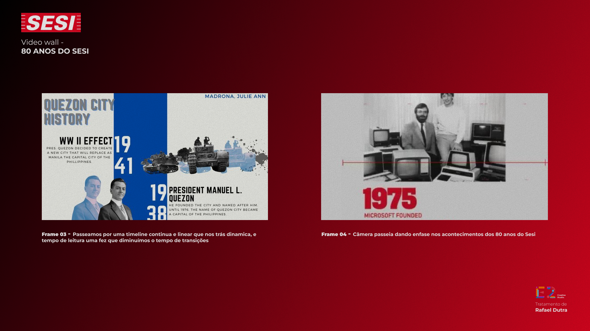
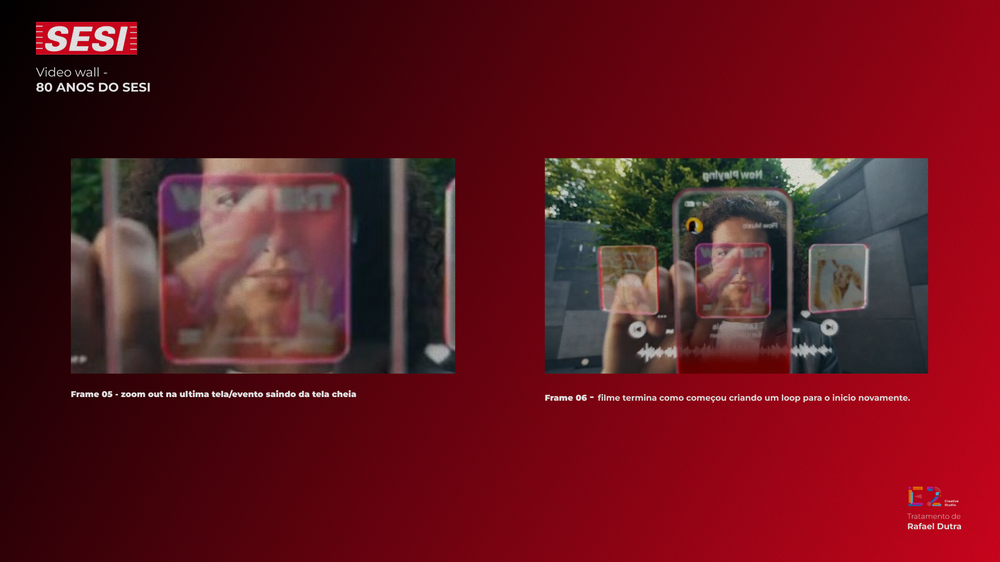

Proposta visual para o painel de LED do evento comemorativo
O video percorre uma timeline dinamica — do presente de volta ate 1946 — revelando os marcos que construiram o SESI.
Linguagem visual moderna, tipografia impactante e transicoes rapidas para capturar a atencao do publico jovem no painel de LED. Sem locucao — tudo comunica pelo visual. O video roda em loop continuo.

Tela de abertura com o logo SESI e o titulo "Video Wall — 80 Anos do SESI". Estabelece a identidade visual e o tom da peca. Fundo com gradiente na paleta institucional.

Frame 01: Uma pessoa desliza o dedo no celular — esse gesto dispara a timeline, conectando o digital ao historico. Frame 02: A camera mergulha na primeira imagem e o conteudo historico preenche toda a tela.

Frame 03: Passamos por uma timeline continua e linear com transicoes rapidas, tipografia bold e grafismos — diminuindo o tempo de leitura e aumentando o dinamismo. Frame 04: A camera vai dando enfase nos acontecimentos dos 80 anos do SESI.

Frame 05: Zoom out na ultima tela/evento, saindo da tela cheia e revelando a grandeza da trajetoria. Frame 06: O filme termina como comecou, criando um loop para o inicio do movimento — exibicao continua no painel.
Eventos que serao destacados na timeline do video. O material fotografico sera fornecido pelo SESI.
Dados pendentes do cliente
XX escolas
+ de XX mil alunos
+ de XX mil professores
Estetica editorial com raizes historicas. Tipografia bold, fotos em camadas e transicoes cinematograficas.
Referencia visual: timelines historicas estilo Vox Explainers, collage editorial, motion graphics com dados e datas em destaque. A paleta segue a identidade institucional do SESI.
Paleta de cores
Tipografia
Bold, impactante, numeros grandes
Fotos
Historicas, em camadas, com grafismos
Transicoes
Rapidas, fluidas, cinematograficas
Identidade
Logo SESI 80 Anos (sem "Conselho Nacional")
Paleta azul institucional — sem vermelho
Formato: 1344 x 840px em MPEG4
Precisamos da aprovacao deste storyboard e do material fotografico para iniciar a producao.
Validar a direcao criativa: timeline retrospectiva, linguagem visual e paleta de cores.
Fotos historicas do SESI, numeros atualizados (escolas, alunos, professores) e logos em alta.
Roteiro + storyboard final: 02/Mar
Entrega do video: 05/Mar
Com a aprovacao, iniciamos imediatamente a producao do video wall e da vinheta comemorativa dos 80 anos.